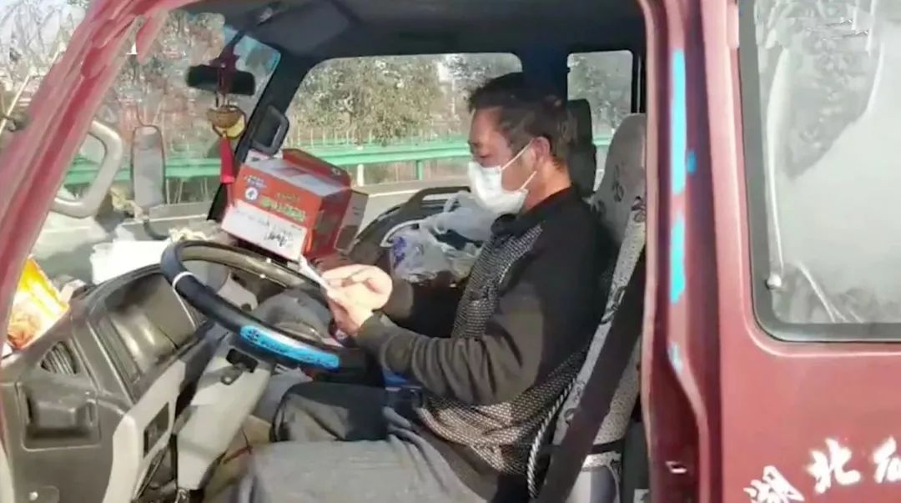
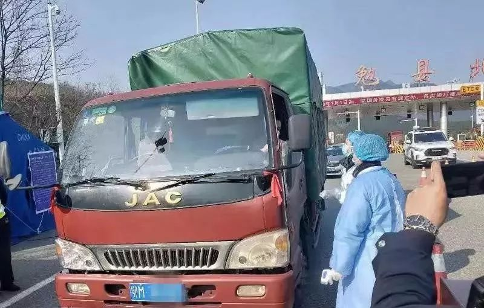

在高速公路上漂流
原文链接 备份链接 疫情时期，人从哪里来变得非常重要。50岁的肖红兵说自己是从「非疫区」来的，他指的是自己的那辆轻型货车。车内居民1，健康。 货车不仅是「非疫区」，也成了他暂时的「家」。他大概是公共卫生专家会赞扬的听话市民，几天几夜不离开 …
***** *****
*****
*****“说实在的，我那段时间最大的奢望什么都不是，是能找个地方让我停下来，睡那么一会儿，我就满足了！”*****

驾驶室里的肖红兵。视频截图
文 | 新京报记者 魏芙蓉
编辑｜陈晓舒 校对 | 刘越
►本文约3737字，阅读全文约需7分钟
2月8日，农历元宵节的上午，50岁的货运司机肖红兵终于走出了那辆鄂M牌的轻型卡车，结束了他的高速“流浪”。
他拥有了一间可以落脚的房间。经汉中交警与汉中北服务区协调，服务区为他免费提供一个小屋子，仅仅是床、空调和热水器这些基础陈设已经让肖红兵格外满足，“20天了，我终于可以洗个热水澡了”。
受新冠肺炎疫情影响，1月23日起，全国多处高速入口实行交通管制，肖红兵的货运行程和回乡计划被打乱了。高速路口难下，乡镇道路难行，1月26日后，肖红兵和他惹眼的鄂M牌货车被迫在高速路上开始漫无目的的行驶。
过去近20天里，肖红兵的床就是轻型卡车的后排座椅。他在上面铺上垫子和被褥，车辆停在高速服务区，“对付着就睡过去了”。
肖红兵和汉中交警交谈的视频中，他几乎涌出眼泪，“说实在的，我那段时间最大的奢望什么都不是，是能找个地方让我停下来，睡那么一会儿，我就满足了！”
视频被传到网上之前，肖红兵身上只剩下百余块存款。在这一天，他收到1万余元爱心捐款，作为日后回家的路费。
肖红兵收到的网友爱心捐款
被“耽误”的回乡路
这辆4米长的轻型卡车，红色车头，车身被墨绿色防雨布包裹着，是肖红兵主要的谋生工具，他早年在江西做铝合金安装，“赚不着钱”，便花两万元买下这辆卡车。
跑短途挣钱不多，肖红兵尽量选择跑长途，路程最少都是五六百公里。虽然辛苦一点，但跑长途的费用按路程计，每公里一块多到两块不等。他在专门的物流平台上接单，将货物送往目的地，卸货后就在当地等着接下一单继续出发。
1月7日，肖红兵从湖北荆州拉着一车汽车配件上路了。先后经过了浙江、贵州、福建等地。
计划中的最后一站是福州，将福州的货物送抵之后，如果顺利，开上一天一夜的车，他就能回到位于湖北省天门市的家中。“春节是全家团圆的时候，再远也要回去过个年”。这是肖红兵家里的老规矩。
肖红兵没想到，抵达福州之后，一车医用物资“挡”住了他的回家路。
“在福州，导航都设定好了，准备回家了，但刚好有个客户说快到春节了找不到车，希望我帮帮忙，看能不能运一批货到四川”。电话里，肖红兵得知要送的货物是一批医用口罩，对方显得非常着急。
“当时我还不知道疫情暴发了，我看这么急就没想太多去拉了，告诉家里今年没法回去过年。”大量的时间耗费在驾驶上，肖红兵的信息是滞后的。手机被用来导航，他很少看新闻。一天行程下来，他往往身心俱疲，想着早点眯眼睡觉，更是无暇顾及日程之外的信息。家人偶尔在手机上给他发来疫情通报的信息，也都没有引起肖红兵的重视。
大年三十那天，当他把货物运到四川达州时，才首次察觉到了异样。高速口被隔离墩挡住，不让车辆出入。一些可以下去的地方，警察戴着口罩，穿着防护服。肖红兵从来没见过这么个阵仗，这让他感到不安。
在四川达州的高速路口，趁着量体温的间隙，肖红兵跟工作人员聊天，这才知道疫情暴发的具体情况，而湖北是高发区。
肖红兵的货车被检查和消毒。受访者供图
鄂M牌车，把他卷入风波之中
肖红兵还未察觉到，他湖北人的身份和那辆鄂M牌车，已经把他卷入风波之中。
大年初一的早上，他在达州平仓县卸货，不远处，有数十名当地人观望着，他们用方言小声议论，并朝着鄂M牌车的位置指指点点。
肖红兵不解，“我听不懂，完全不知道怎么回事。我之前到很多地方都卸过货，从来没有人围观，也从没有碰到过这样的情况，我有点被吓到了”。
人群中有人报了警，不到半个小时警察就来了。
在警察例行询问时，肖红兵把所有的高速收费发票都拿了出来，按照时间顺序一张张衔接起来，以此证明自己1月7日离开荆州之后未曾涉足湖北。
离开湖北的时间长，也没有发热现象。警察建议他尽快离开达州。
警察走了，肖红兵以为这就证明自己没“问题”了。在当地的铺子吃完饭准备离开之时，他的车又被堵住了，“当地人用小三轮车在我的车前后拦着。我想跟他们说明情况，他们告诉我，湖北的车不让停”。当地人告诉肖红兵，“赶快走。”
肖红兵在手机上把导航打开，将终点设为湖北荆州，最短的路线显示813公里。他重新开上高速，按照往常习惯，他绝不会跑空车回去，“800多公里，油钱就得1000多块钱，过路费大概就是500块钱”。
他希望能在返乡的途中接上一趟货再走。一则陕西的订单解了燃眉之急，他准备先前往陕西拉这车大米。但途中，订单被取消了，因为他资料中登记的湖北信息。
肖红兵着急，在接下来的接单中，他会先打电话给物流公司询问，“我主动说我是湖北的车，想问问有没有影响”，但电话那头的人一听到是湖北的车，便都连说“不行不行”！
工作人员在电话里劝肖红兵：现在大家对湖北的车和湖北的人都害怕，湖北的车别说能不能下高速，装货肯定也装不了。
手里只揣着2000块钱，肖红兵不敢在外面多作停留，“没办法，我接受现实准备空车跑回去了”。
找不到终点的行程，只能往前开
**
但返乡的路也没有想象中容易。
肖红兵不敢告诉家里70多岁的老父母这一路的处境。他和老婆打电话商量，才得知，天门的村庄、小区已经全部实行封闭管理，所有的机动车一律不许上路，连电动车都不让骑。外来车辆一律不许滞留。
肖红兵给老家的110打电话咨询。“他们说如果在外地安全的话也尽量不要回来了，本地医疗资源非常紧张，要避免给政府、医院增加压力。他们建议我跟我所在的地方110联系，暂时找个地方安置下来，等疫情结束了以后再回来”。
肖红兵这才意识到：家也回不去了。
异地的乡镇不允许外地人外地车停留，湖北车尤甚。高速公路上的检疫点，工作人员也特地告知肖红兵：湖北的车“敏感”，为了安全考虑，不建议下高速。
达州通向荆州的高速公路上，肖红兵发现，越来越多的高速服务区不让停了，“我只能一直开，停不下来”。
“以前导航，有个终点我还知道怎么走，但是这一次导航我不知道选哪个终点，我不知道应该往哪走”。摆在他眼前的是一条没有终点的路。

肖红兵和站在货车前打电话。图片来自汉中发布 官方微信
服务区不让停车，意味着肖红兵在高速上失去了踏实睡觉的可能。他曾经尝试下高速停在一条乡间小道上想短暂休息，但是还没一会儿就有居民过来说，“赶快走湖北车，要不报警了”。
困得快睡着的时候，他掐大腿，揪头发。因为疲劳驾驶，有好几次甚至差点撞到护栏上面。“我当时在想，这怎么办？我真的以为过不去了”。
1月26日以后，在高速公路上两天两夜的行程里，肖红兵睡了两次，一次不到两小时，一次40分钟，都是只能停在服务区以外的高速紧急停车带上。
两次浅眠最终都被交警叫醒。占用紧急停车带，按照交通法，需要对肖红兵扣6分罚款200元。但了解他的情况后，交警没有处罚，“他们看到我也太累了，说这次是特殊情况，让我开走”。
肖红兵只能再接着往前开。
“希望湖北车重新上路时，大家能正常对待和接受”
**
肖红兵计算过，自离开四川达州后，失去目的地的那段路途里，油费和过路费花费了4000多元。
困意难抵，他向高速路工作人员求助时，对方告知他一些集中安置湖北人的宾馆，肖红兵犹豫了，“如果要住下就不是一天两天的事，这样下去不知道要花多少钱。”
往常跑长途他也很少住宾馆，一般都是在高速服务区睡上几个小时接着再跑。“只要找个地方不赶我走，有吃的，我在车上睡也没关系，能坚持下来，只是没想到都不能停”。
在高速路上行驶的时候，与他同行的车辆也不多，肖红兵在停车的间隙留心过，“平均每二十分钟会有一辆车经过”。他遇到过一次“同行”，在肖红兵打盹时敲开车窗，二人在各自的车厢里倾吐一路上的经历，并交换了行程。
肖红兵的行程没有变化。他的导航目的地还是湖北荆州，尽管知道无法成功抵达了，但他只希望尽量靠湖北近一点，他模模糊糊地开，能走的地方就走，不能走的地方就绕，“走到后面我都不知道是个什么方向了”。
1月29日，肖红兵行驶到了陕西汉中的高速口，看到有标语写着“疫情防控禁止通行”，他就找了一块宽敞点的地方，把车停了，睡了。
直到被陕西交警叫醒时，他已睡了近3小时，是多日来睡得最长的一次。
交警没有催促他离开，他们把肖红兵带离了紧急停车带。在汉中北高速服务区，交警跟服务区负责人沟通后，肖红兵的车终于可以在这里停下来。
在只有泡面的驾驶室里，肖红兵想念米饭的味道。初到汉中北服务区的几天，他将自己的鄂牌卡车停稳，首先去超市买了几盒自热米饭，16元一盒，吃完嘿嘿笑，量不够，这才发觉有点小贵。

汉中交警送给肖红兵的水和食物。图片来自汉中发布 官方微信
此后十天，他还是睡在车上。但服务区工作人员每天会为他量体温，帮他给车消毒。陕西当地有一种巴掌大的面饼，服务区主管过来都会顺手捎上几个。交警队的负责人还带来了方便面和牛奶。
开春时节的陕西汉中，晚上气温降到零下一摄氏度左右，肖红兵启动发动机，让热风填满驾驶室。但很多时候，“热风”也是奢侈的，吹上一会他便关掉，“怕耗油”。
2月8日元宵节，一则视频拍到肖红兵和交警的交谈状态，他几乎涌出眼泪，“说实在的，我那段时间最大的奢望什么都不是，是能找个地方让我停下来，睡那么一会儿，我就满足了！”
视频被传上网络前，肖红兵身上只剩下百余块存款。在这一天，他收到1万余元爱心捐款，作为日后返家的路费。
更大的惊喜是，汉中北服务区的工作人员还为他安排了房间，免费。仅仅是床、空调和热水器这些基础陈设已经让肖红兵格外满足。
“我是以拉货为生的，等到疫情过去，全国解封了，湖北的恢复估计还会滞后很多。我就希望我们湖北的车重新上路时，大家能正常对待和接受。”这是肖红兵现在唯一的心愿。
*洋葱话题*
*▼*
*你身边的人因为疫情受到了怎样的影响？*
*后台回复关键词*****“洋葱君” ，加入读者群****
***推荐阅读***

一个视频博主眼中的武汉
***危险无人察觉：******“世界梦号”豪华邮轮疫情始末***
武汉居委会主任：居民恨不得把你当救命稻草

*********既然在看，就点一下吧****** *********
*********
原文链接 备份链接 疫情时期，人从哪里来变得非常重要。50岁的肖红兵说自己是从「非疫区」来的，他指的是自己的那辆轻型货车。车内居民1，健康。 货车不仅是「非疫区」，也成了他暂时的「家」。他大概是公共卫生专家会赞扬的听话市民，几天几夜不离开 …
原文链接 备份链接 昨晚我一夜没睡，今天早上就出发了，我想回大温州。 但是开了一整天，晚上六点了，我还在乐清北高速口吃旺旺雪饼。 这就是我的元宵节晚饭了。 加上今天，我已经在车上住了15天，啃方便面啃到口腔溃疡。 ▲我在江西三清山服务区 …
原文链接 备份链接 文 |《财经》数据研究员 徐进 编辑 | 谢丽容 元宵节过完了，再下来是“龙抬头”。 1、 今日概况 2月8日0—24时，31个省（自治区、直辖市）和新疆生产建设兵团报告，新增确诊病例2656例（湖北2147例），新增 …
原文链接 备份链接 有蔬菜农业生产基地和企业在接受南都周刊记者采访时表示，受新冠肺炎疫情影响，田里蔬菜无法及时收割与销售，焦心未来收入存在中断风险。 _ 记者| 王晓珊 实习生 | 甘笠男 编辑 | 盛倩玉 黄冈市黄梅县大河镇袁夫稻田 水 …
原文链接 备份链接 陈润/文 一 从2020年1月15日回武汉至今，我在武汉整整呆了24天。这是我自大学毕业以来在武汉呆得最久的一段时间，也是自去年家人搬回武汉陪伴最长的一段日子，更是我人生至今最困难悲伤的一段岁月。 一切都因新型冠状病毒 …